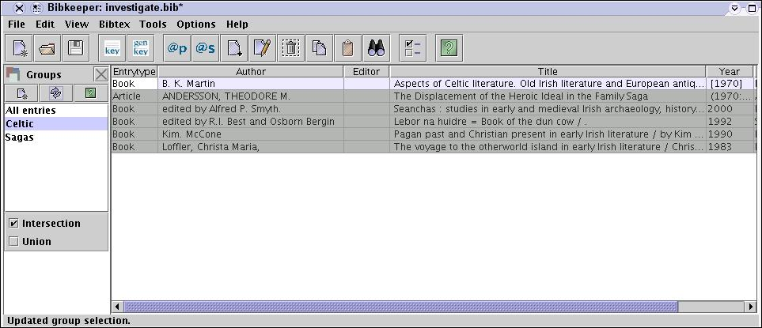
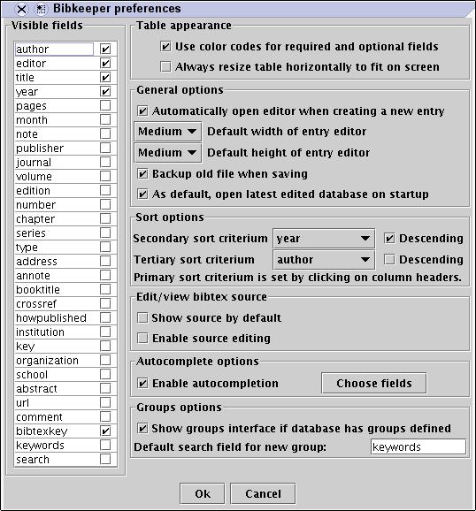
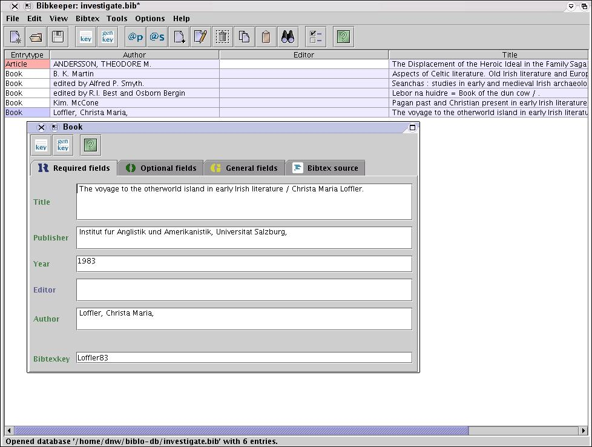
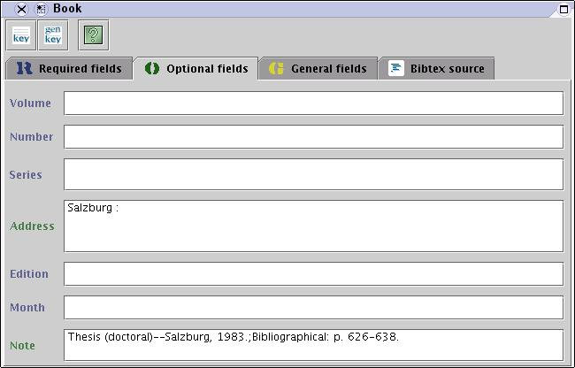
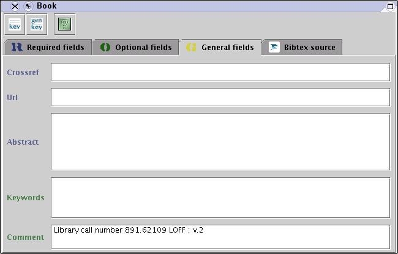
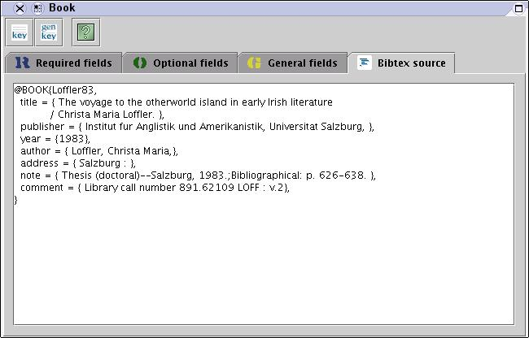

"Bibkeeper is a Java application for managing BibTeX (.bib) databases. Bibkeeper is intended to have a user-friendly graphical interface, and runs on all platforms for which the Java Virtual Machine is available. The primary aim of Bibkeeper is not to have the most features, but the most useful ones."
The latest version supports grouping of references based on keywords. http://bibkeeper.sourceforge.net/

Bibkeeper main panel with groups panel. Groups are defined and use keywords to highlight and sort entries.





JBibtexManager (JBM) is a Java Graphical User Interface (GUI) for managing citations in BibTex format. It Requires Java 1.4. Features - add new entry via a gui or paste (or type in) a bibtex formated string; - sort entries based on year, journal, key, type (by clicking on the column heading); - print displayed table; - search for text in authors or title column; - keyboard shortcuts for all the entries in the menu; - emacs type keyboard shortcuts for editing entries. It has import for INSPEC, ISI, Medline XML, OVID, RIS, SciFinder, and export as HTML, and plain text.. http://csb.stanford.edu/nbatada/JBibtexManager/
Note; The entries in the data entry form can be defined by the user for each document type.